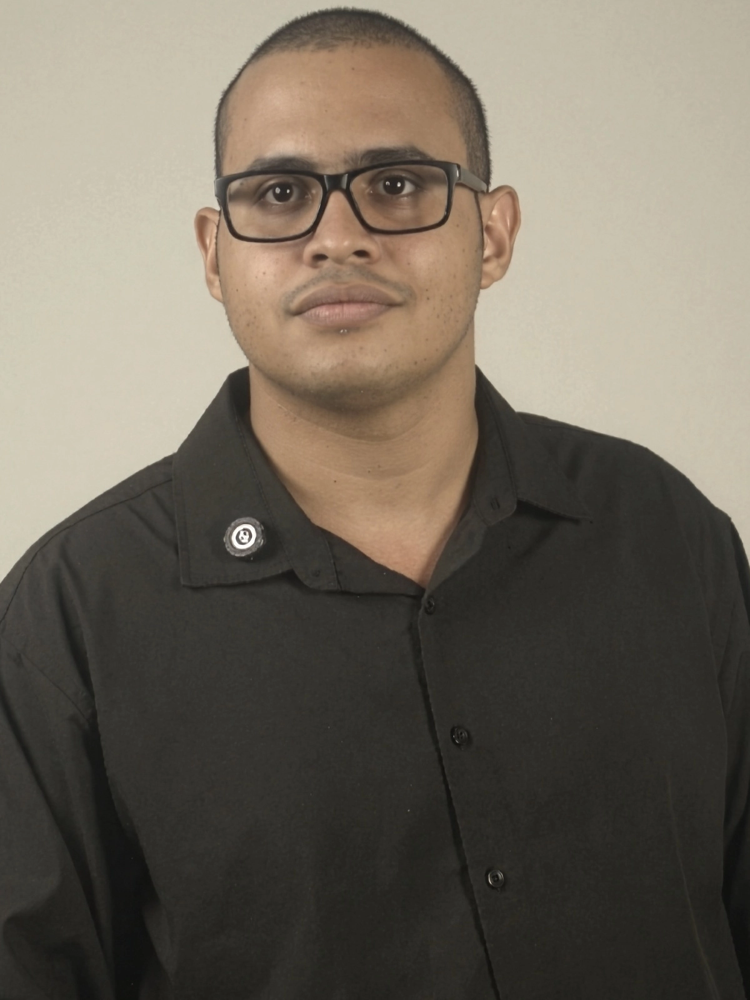
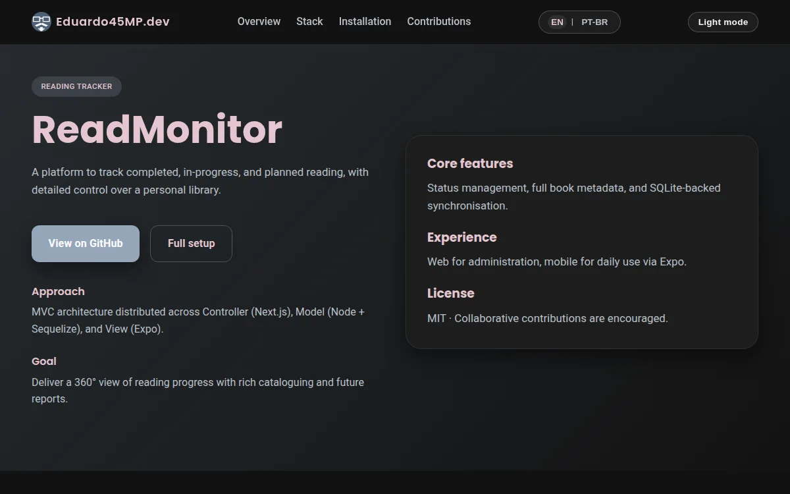
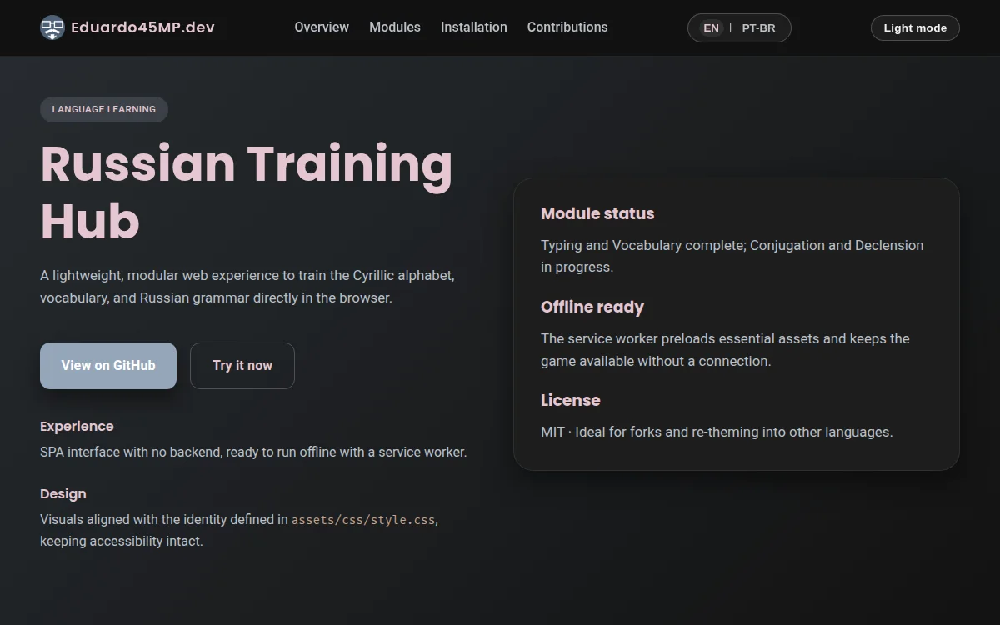
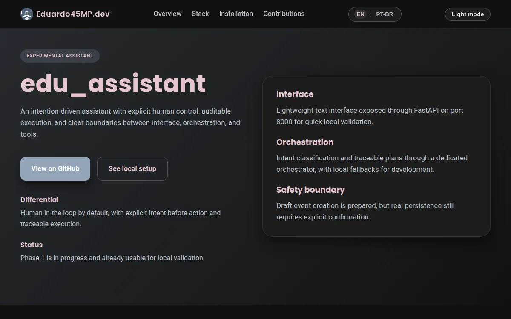
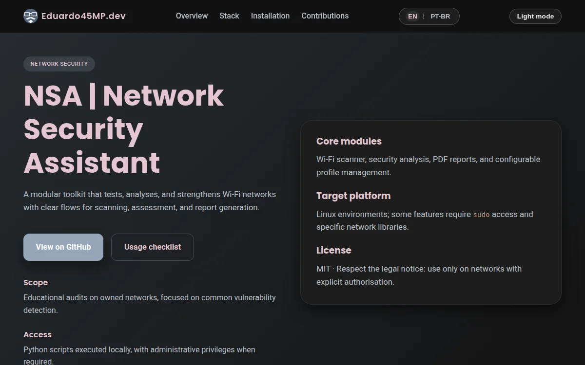
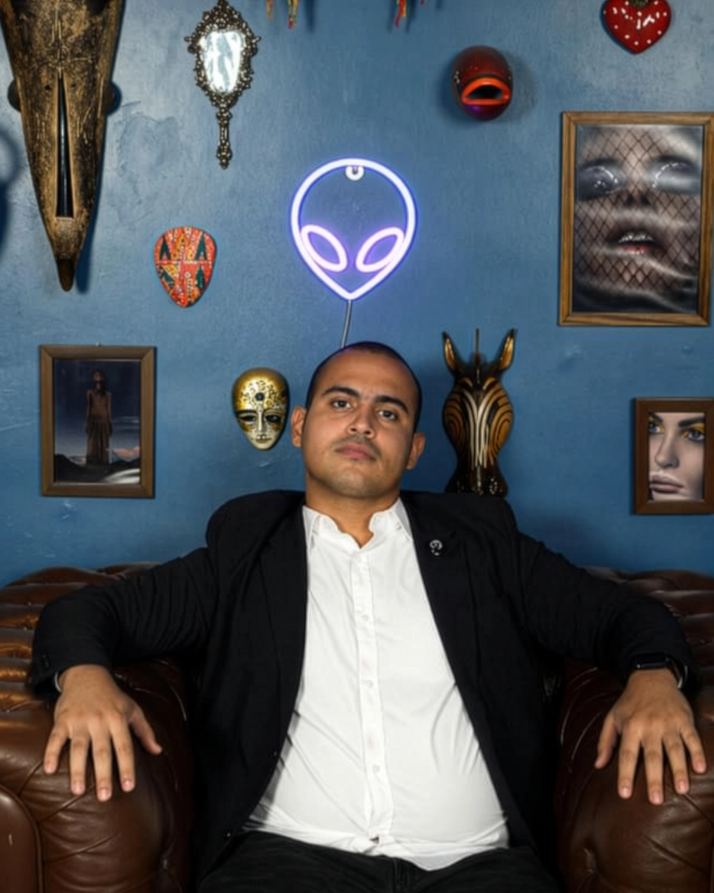

Digital products
Focused web experiences and tools shaped around real users, workflows and commercial goals.
Founder & Software Engineer
I build businesses through software.
I turn business problems into useful digital products, automation and systems designed to grow.

Strategy at the start. Software at the core.
What I build
Focused web experiences and tools shaped around real users, workflows and commercial goals.
Reliable workflows that connect tools, reduce repetition and turn operations into software.
Technical foundations for sales, research, decision-making and scalable execution.
Selected work
A focused selection of products and experiments. Each began with a concrete problem, not a technology checklist.

01
Laravel · JavaScript · MVC · MySQL
View on GitHub ↗
02
JavaScript · PWA · Gamification · i18n
View on GitHub ↗
03
Python · LLMs · Tool orchestration · Local-first
View on GitHub ↗
04
Python · Networking · CLI · Security
View on GitHub ↗More experiments, including AI_studies, live on GitHub. Explore all repositories ↗

Beyond the code
I am interested in the whole journey from a useful insight to a sustainable company: research, product decisions, technology and commercial reality.
Outside delivery cycles, I explore languages, learning systems and experimental projects. They keep my thinking broad and my craft in motion.
GitHub
Public experiments, engineering studies and open-source projects — the deeper technical layer behind the selected work.
View GitHub ↗Start a conversation
Let’s talk about the product, system or opportunity behind it.